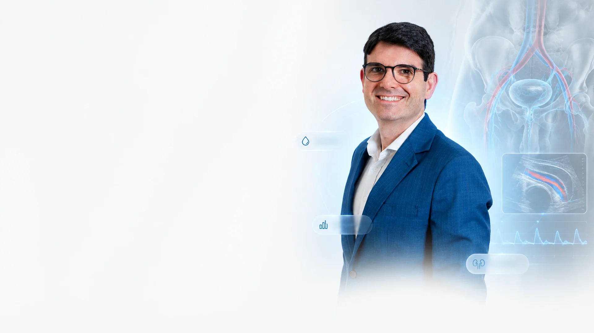
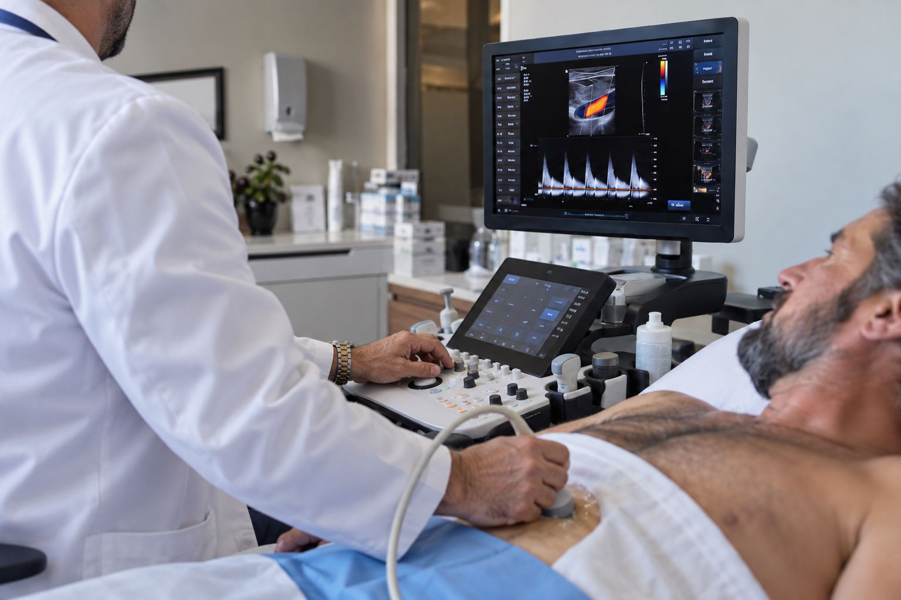
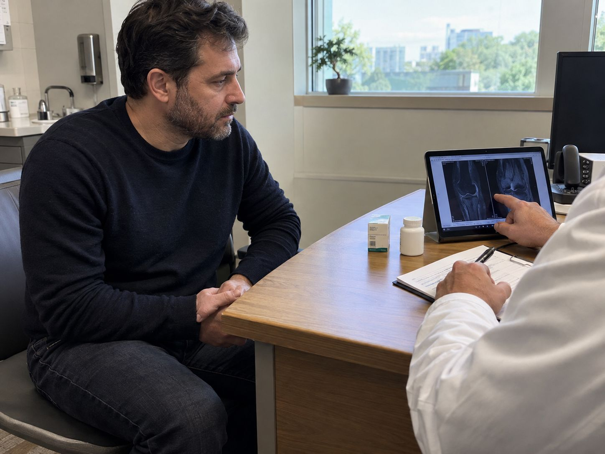
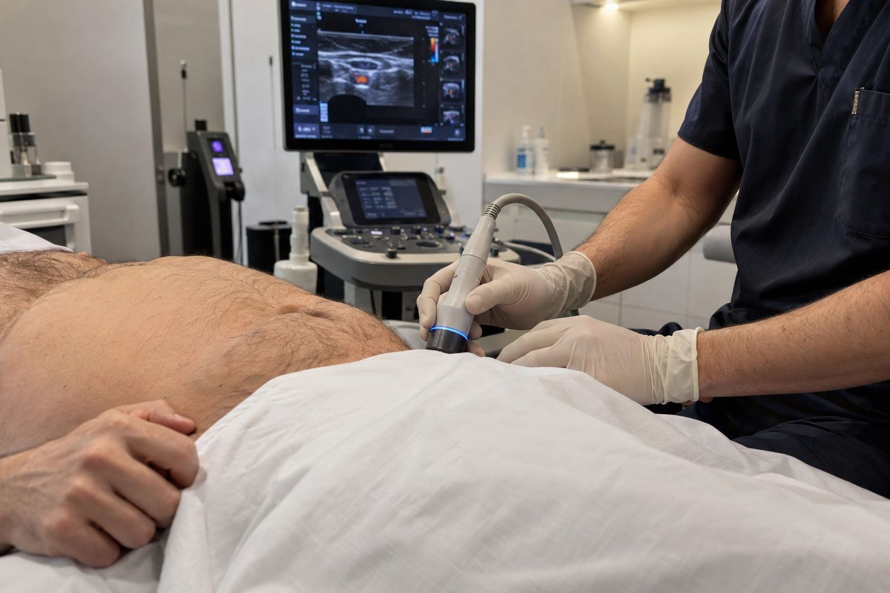
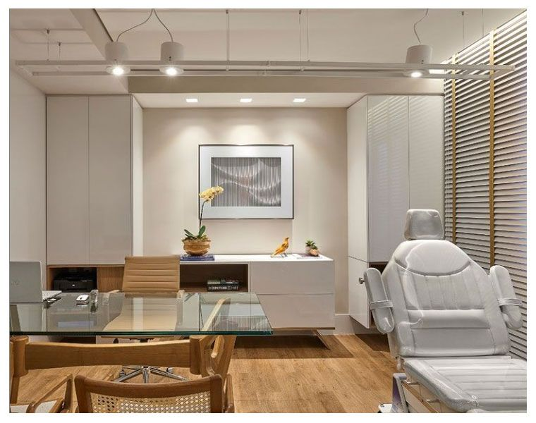

Vascular
Fluxo sanguíneo insuficiente — a causa física mais comum.
Aqui não se empurra receita. Uma avaliação criteriosa com urologista — incluindo Doppler peniano quando indicado — identifica a origem do problema e define o tratamento certo para o seu caso.

A ereção depende de três etapas: o sangue entra, os corpos cavernosos enchem e as veias se fecham para ele ficar. Quando uma delas falha, a ereção não se sustenta.
Onde o fluxo falha determina o tratamento. É por isso que se investiga antes de tratar.
Fluxo sanguíneo insuficiente — a causa física mais comum.
Testosterona baixa e outras alterações.
Ansiedade e estresse, muitas vezes somados ao físico.
Alguns remédios, tabagismo e sedentarismo.
Nada de conduta padrão. A avaliação segue etapas para encontrar a causa real.

Entender seus sintomas, hábitos e histórico de saúde.
Avaliar testosterona, glicemia e fatores associados.
Quando indicado, mede o fluxo sanguíneo e revela a causa vascular.
Conduta definida a partir do que a avaliação mostrou.
Existe uma escada de opções. A avaliação diz qual é a certa — sempre há um caminho adequado ao seu caso.
Sono, atividade física, controle de pressão e glicemia.
Conduzido e ajustado por especialista, não por conta própria.

Opções regenerativas para a origem vascular do problema.

Para casos específicos e refratários, discutidas caso a caso.
Dr. Eduardo Miranda
CRM-[UF] [número] · RQE [número] — Urologia
Urologista dedicado à saúde sexual masculina, com foco em diagnóstico criterioso da disfunção erétil e tratamento individualizado.
Atendimento sigiloso, sem exposição e sem julgamento. Seus dados são protegidos (LGPD) e a conversa fica entre você e o médico. Falar sobre isso já é difícil — aqui, é acolhido com seriedade.
A disfunção erétil é uma condição tratável. Com o diagnóstico certo, a grande maioria dos homens recupera a função e a confiança. O que muda o jogo é dar o primeiro passo.
Preencha e nossa equipe entra em contato em até 24h, com discrição.
Atendimento particular. Retorno em até 24h úteis.

As dúvidas mais comuns de quem vai marcar a avaliação.
A consulta é tranquila. Quando o Doppler peniano é indicado, o exame é rápido e o desconforto é mínimo — tudo é explicado antes.
Não pare nada por conta própria. Leve o nome e a dose do que você usa para a consulta. Em muitos casos o que muda é o ajuste, não a suspensão — e essa decisão vem depois da avaliação.
Sim. O atendimento é reservado do começo ao fim e seus dados são tratados conforme a LGPD. O que é dito na consulta fica na consulta.
Depende da causa. A primeira consulta serve para investigar e, quando necessário, solicitar exames. A partir daí o plano é montado para o seu caso e reavaliado no retorno.
O atendimento é particular e os valores são informados no contato, antes do agendamento. A avaliação é o primeiro passo — sem ela não dá para falar em tratamento.